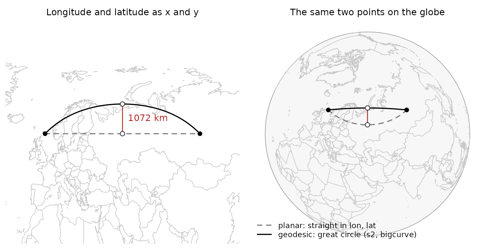
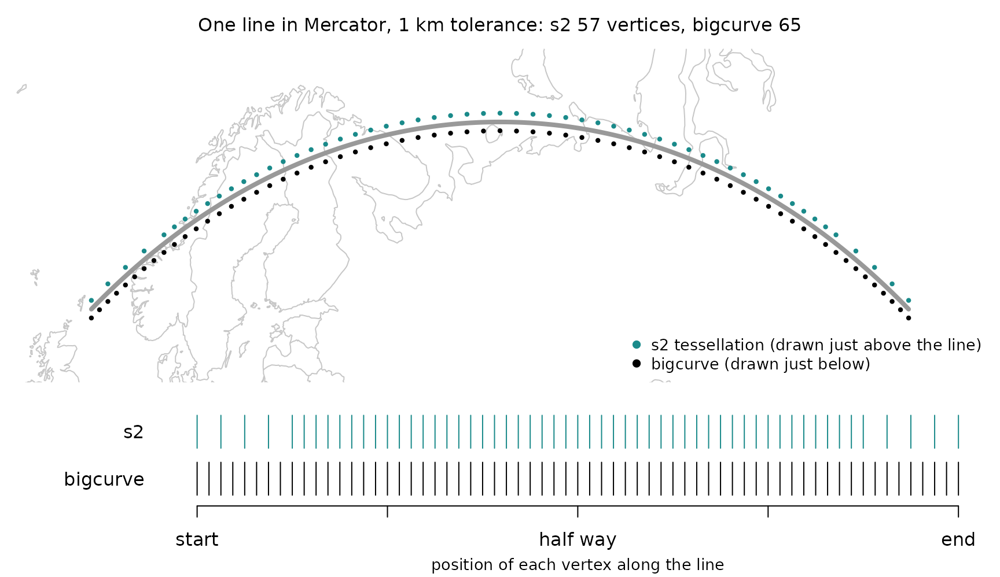
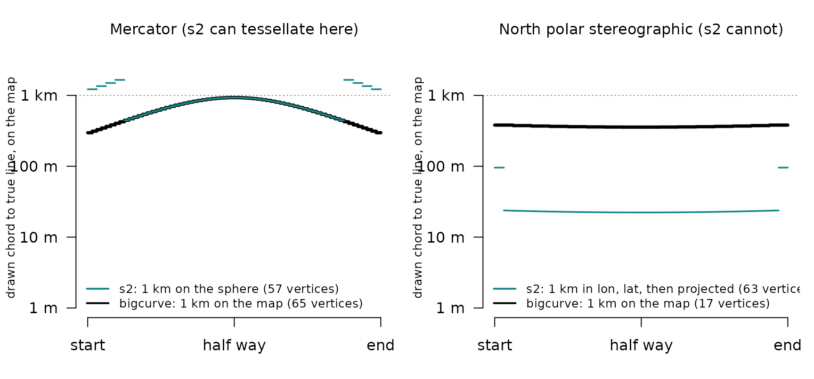
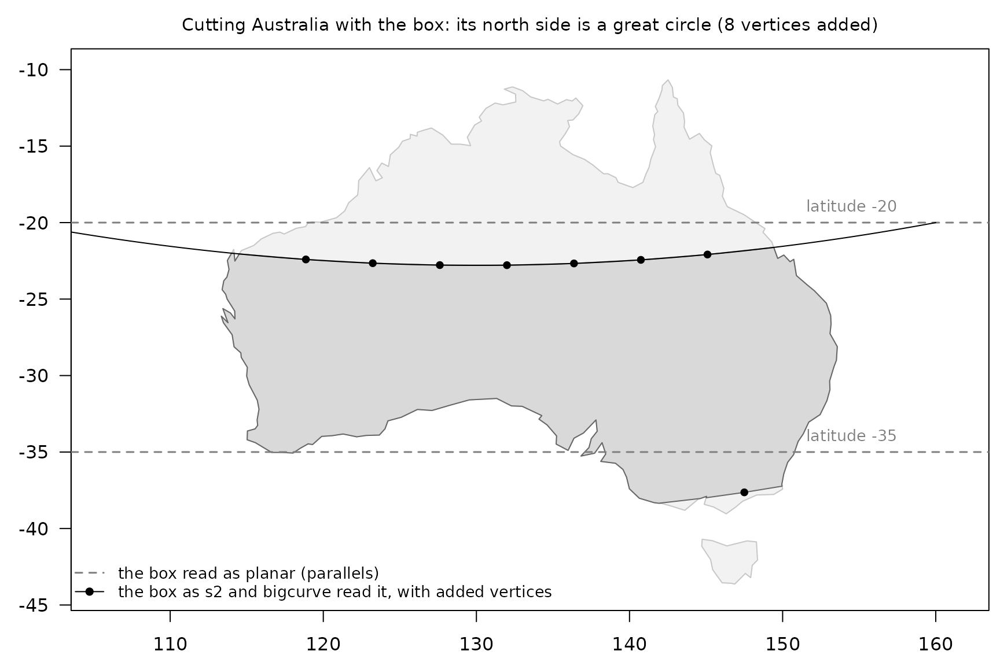
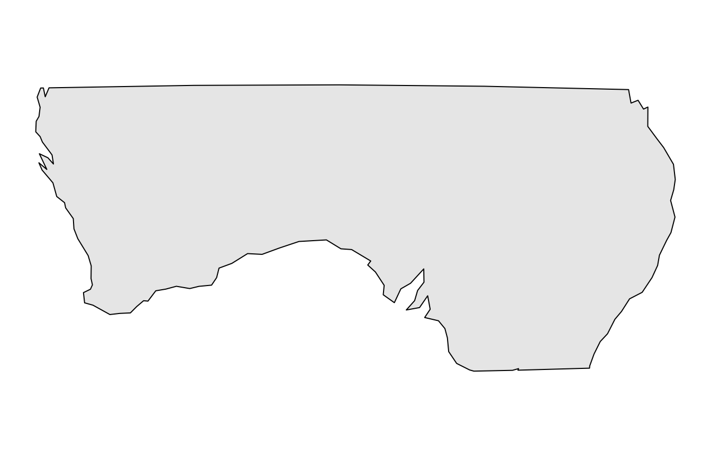

bigcurve and s2: drawing the sphere on a flat map
Source:vignettes/bigcurve-and-s2.Rmd
bigcurve-and-s2.RmdIf you already use s2 (directly, or through sf, where it is the default for longitude and latitude data) you may wonder where bigcurve fits. The short answer: they agree on what a line between two points on the Earth is, and they answer different questions about it.
- s2 answers “what is this shape on the sphere, and how does it relate to other shapes?” Does it intersect, what is its area, what is the union, how far apart are these?
- bigcurve answers “how many points do I need to draw this shape in a given map projection so that it looks right, and no more?”
In every figure below s2 is teal, bigcurve is black, and the planar reading of the same coordinates is a grey dashed line. One line runs through the whole guide: along latitude 60, from longitude 0 to 100.
At a glance
| s2 | bigcurve | |
|---|---|---|
| Job | geometry on the sphere: predicates, areas, unions, distances | drawing: just enough vertices for one map |
| Edges | great circles | great circles |
| Works in | 3D unit vectors, no projection | the plane of the target map |
| Tolerance measured | on the sphere (metres converted to an angle) | on the map, in the map’s units |
| Projections for tessellating | plate carree, Mercator, orthographic | anything PROJ can do |
| Output | s2 geography, or projected coordinates | longitude, latitude, so any tool can project it |
| Input | s2 geography | matrices, segment meshes, wkpool topology (so any wk-readable data) |
| Planar edges to geodesic | yes, on import (planar = TRUE) |
no |
What is a line between two points?
Give a computer two points in longitude and latitude and ask for the line between them. There are two common answers.
- The planar answer: draw a straight line in longitude, latitude space, as if the coordinates were x and y on graph paper. This was what sf and GEOS did for years, and what most file formats quietly assume.
- The geodesic answer: follow the shortest path over the surface of the Earth, a great circle arc.
s2 takes the second answer for every edge, and so does bigcurve. The planar middle of our line is (50, 60). The great circle middle is a long way north of it:
s2_as_text(s2_interpolate_normalized(line, 0.5))
#> [1] "POINT (49.99999999999999 69.63942512488693)"
## how far is the planar middle from the true line, in metres?
s2_distance(s2_lnglat(50, 60), line)
#> [1] 1071857
More than a thousand kilometres. Neither answer is wrong: they are two different shapes that happen to share their vertices. What matters is knowing which one your data means. s2 makes the geodesic reading the default; bigcurve assumes it.
Does bigcurve draw s2’s line?
Yes. bigcurve inserts its new vertices exactly on s2’s arc. Densify the line and ask s2 how far each new vertex is from it:
d <- densify(the_line, "+proj=laea +lon_0=50 +lat_0=60", tolerance = 1000)
nrow(d)
#> [1] 13
max(s2_distance(s2_lnglat(d[, 1], d[, 2]), line))
#> [1] 1.749256e-09A few nanometres, which is floating point noise. The added vertices change nothing about the shape on the sphere; they only make it explicit for a flat drawing.
Where is the work done?
s2 does all its work on the sphere itself. Internally every point is a unit vector in three dimensions, and there is no map projection anywhere in sight. That is why s2 has no trouble at the poles or at the antimeridian: on a sphere there is no edge of the map to fall off.
bigcurve does its work in the plane of the map you are going
to draw. For each edge it projects the great circle midpoint
with PROJ and asks how far it lands from the straight chord between the
projected endpoints. If it is further than tolerance (in
the map’s own units, usually metres) the edge is split and both halves
are checked again. This is the adaptive resampling that Mike Bostock
wrote for d3-geo.
So the same edge gets different numbers of vertices in different projections, because the curve is a different shape on each map:
Where do the vertices go?
s2 is not blind to this problem. Its C++ library has an edge tessellator that turns geodesic edges into chains of straight edges in a projection, and the R package exposes it when it writes data out, for plate carree (longitude, latitude), Mercator and orthographic maps. Here is our line tessellated for Mercator by both packages, each asked for 1 km:
merc <- "+proj=merc +R=6378137"
tol <- 1000
## s2, in its own Mercator, then back to longitude and latitude
m <- wk::wk_handle(line, wk::wkb_writer(),
s2_projection = s2_projection_mercator(),
s2_tessellate_tol = tol / s2_earth_radius_meters())
v_s2 <- rproj_xy(as.matrix(wk::wk_coords(wk::wkb(m))[, c("x", "y")]),
"OGC:CRS84", source = merc)
## bigcurve, for the same Mercator
v_bc <- densify(the_line, merc, tolerance = tol)
c(s2 = nrow(v_s2), bigcurve = nrow(v_bc))
#> s2 bigcurve
#> 57 65
In Mercator the two come out close, in count and in placement: both are solving the same problem in the same spirit. The difference is in what “1 km” means.
What does a tolerance mean?
s2 measures its tolerance on the sphere; bigcurve measures it on the map. On a map that stretches distances, as Mercator does by a factor of two at latitude 60, those are not the same thing. And s2 can only aim at its three projections: for any other map the best it can do is tessellate in longitude and latitude and hope that is fine enough.
The figure measures, for every drawn chord, how far it strays on the map from the true projected line.

On the left, s2’s 1 km on the sphere becomes up to 1.7 km on the Mercator map near the ends of the line, while bigcurve stays under 1 km everywhere. On the right, s2’s longitude, latitude tessellation happens to be far finer than this map needs: 63 vertices for errors of tens of metres, where 17 keep bigcurve under 1 km. On another map, or another line, the same tessellation could just as easily be too coarse. bigcurve’s tolerance is always “how far may the drawn line stray on this map”.
The “planar edges to geodesic” row of the table deserves a sentence
too. If your data really are planar in longitude and latitude (a
coastline digitised on a plate carree map, say), s2 can densify on the
way in (s2_geog_from_wkb(..., planar = TRUE)) so
that its geodesic edges follow the planar ones. bigcurve never does
this. It always assumes the edges you hand it are great circles.
Using them together
Because both packages agree on what an edge is, a natural pipeline is s2 for the analysis and bigcurve for the drawing. Here is a “box” written with four corners, from longitude 100 to 160 and latitude -35 to -20. We cut Australia with it in s2, then densify what the cut produced for a map in plain longitude and latitude:
box <- s2_make_polygon(c(100, 160, 160, 100), c(-35, -35, -20, -20))
aus <- s2_data_countries("Australia")
cut <- s2_intersection(aus, box)
pool <- wkpool::establish_topology(wk::as_wkb(cut))
out <- densify(pool, "+proj=eqc")
c(before = nrow(wkpool::pool_vertices(pool)),
after = nrow(wkpool::pool_vertices(out)))
#> before after
#> 110 118
Read as s2 reads it, the box’s north side is not latitude -20: it is a great circle that dips to -22.8 in the middle, and that is the line s2 cut along. The coastline is already finely detailed and is left alone; the new vertices go only along the long sides the box contributed. Drawing the grey reading while analysing the black one is how a map ends up disagreeing with its own analysis.
To draw the result in any other projection, turn the pool back into
geometry and project it. The fast general path is wk and PROJ: build the
transform once with PROJ::proj_trans_create() and stream
the geometry through wk::wk_transform(). Any other tool
that projects (sf, terra) works too, since the densified vertices are
ordinary longitude, latitude points. Remember to densify for the map you
are drawing:
prj <- "+proj=laea +lon_0=130 +lat_0=-30"
geom <- wkpool::cycles_to_wkb(wkpool::merge_coincident(densify(pool, prj)))
drawn <- wk::wk_transform(geom, PROJ::proj_trans_create(wk::wk_crs(geom), prj))
dc <- wk::wk_coords(drawn)
op <- par(mar = rep(0.5, 4))
plot(range(dc$x), range(dc$y), type = "n", asp = 1,
axes = FALSE, xlab = "", ylab = "")
plot(drawn, col = "grey85", add = TRUE)
par(op)What else is the same, and what is not?
- Both are spherical. s2 uses a sphere of radius about 6371 km; so does bigcurve’s midpoint. Neither follows the ellipsoid. For drawing a map the difference is small (the WGS84 geodesic from Hobart to London runs up to about 23 km to one side of the great circle). For distances and paths on the ellipsoid use the geographiclib package (GeographicLib is also inside sf and geosphere).
-
Neither clips. If part of a line is beyond the
horizon of an orthographic map, s2 can intersect with
s2_hemisphere()first; bigcurve leaves unprojectable edges alone and never errors. -
The antimeridian. s2 has no seam at all. bigcurve
keeps whatever longitudes you gave it: an edge along 180 stays at 180,
an edge written from 170 to -170 is refined through 180 continuously. If
you need the two copies of the seam to be one boundary, densify first
and then fuse with
wkpool::merge_coincident(period_x = 360). -
Operations. Union, intersection, buffer, distance,
area and containment are s2’s job. bigcurve has one verb,
densify(), and it does not change the shape.